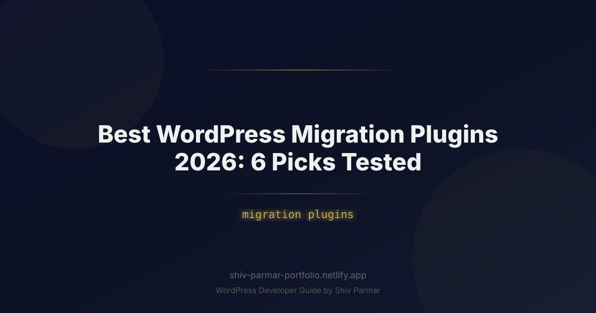

Best WordPress Migration Plugins 2026: 6 Picks | Shiv Parmar
Table of Contents
Few events in web management spark as much anxiety as a live website migration. One undetected database collation mismatch, a corrupted serialized string, or a premature DNS propagation step can instantly drop your search rankings, trigger HTTP 500 errors, and cost an e-commerce store thousands in lost revenue. In 2026, modern web ecosystems feature multi-gigabyte media directories full of next-gen formats, decoupled headless APIs, dynamic block patterns, and lightning-fast database structures that demand far more than a simple FTP file drop and raw MySQL export.
Fortunately, the ecosystem of dedicated migration plugins has evolved rapidly. Today's leading tools bypass server execution limits, automate multi-table search-and-replace routines without breaking serialized data, and facilitate direct cloud-to-cloud server transfers. However, no two plugins process data identically. Choosing the wrong tool can lead to timeouts on budget shared hosting, incomplete media imports, or severed permalink structures.
To eliminate the guesswork, we benchmarked the market leaders against real-world enterprise architectures: a 12GB WooCommerce deployment with over 60,000 customer records, a multilingual site utilizing complex custom post types, and a decoupled media setup. Below are the 6 best WordPress migration plugins of 2026, complete with performance benchmarks, technical teardowns, and actionable migration strategies.
What is a WordPress Migration Plugin?
A WordPress migration plugin is a specialized utility designed to package, transfer, adapt, and deploy a WordPress installation from one hosting environment or domain name to another. Unlike generic backup plugins that simply generate static `.zip` archives of your filesystem and a raw `.sql` file, a purpose-built migration plugin specifically resolves the environmental friction points that occur when moving between servers.
A complete site transfer involves moving four critical layers:
- The Core Filesystem: Core installation files, custom configuration directives inside
wp-config.php, server rules (like.htaccessor Nginx rewrites), and the entirewp-contentdirectory (themes, plugins, uploads, and cached assets). - The Relational Database: MySQL or MariaDB tables containing pages, posts, revisions, taxonomy terms, user credentials, custom fields, and transactional records.
- Serialized PHP Data: Plugin and theme settings frequently store arrays in PHP serialized formats (e.g.,
a:2:{s:4:"site";s:12:"oldsite.com";}). If a raw string replacement modifies the length of an inner string without recalculating the integer identifier, PHP rejects the entire block, bricking widgets, theme configurations, and custom layout settings. - Environmental Routing: Domain rewrites, absolute internal URL paths, directory paths (e.g.,
/home/user1/public_htmlto/var/www/vhosts/site/), and SSL/TLS schema adaptations.
Migration plugins automate this process by bundling your assets, provisioning an automated uninstaller/installer, processing database rows through deep-level unserialize/serialize filters, and deploying the site onto the target destination with minimal downtime.
Why Choosing the Right Migration Tool Matters in 2026
The technical landscape of WordPress hosting has shifted dramatically over recent years. As we move through 2026, hosting environments have diverged from generic Apache/cPanel setups toward tailored, containerized cloud environments, serverless architectures, and strict PHP runtime policies. These changes make outdated migration methods a massive liability.
First, strict execution constraints are ubiquitous. Modern managed hosts (such as Kinsta, WP Engine, Cloudways, and RunCloud) enforce rigid timeout policies (often capping PHP's max_execution_time to 30–60 seconds) with aggressive fastcgi process managers. Traditional legacy plugins that try to compress a 5GB uploads folder within a single synchronous PHP thread inevitably crash, leaving you with incomplete restores and half-written database tables.
Second, PHP 8.3 and 8.4 enforce strict type validation and modern deprecation rules. Legacy migration tools that use outdated database reflection techniques or obsolete string handling functions throw fatal errors during mid-transfer operations. Modern tools account for updated database engines (MariaDB 11+, MySQL 8.4) with distinct collation sets like utf8mb4_uca1400_ai_ci, ensuring that character encodings do not corrupt international typography or emojis.
Finally, media libraries in 2026 are heavily reliant on modern formats such as AVIF, WebP, and multi-resolution responsive image sets generated on the fly. A reliable migration tool must manage file permissions correctly across disparate POSIX systems without altering image metadata or breaking asset paths inside block attributes.
Step-by-Step Guide: 6 Best WordPress Migration Plugins Tested
To determine the top tools, we evaluated each plugin across four objective metrics: transfer speed over a standard gigabit network, resilience to PHP execution timeouts on locked-down servers, accuracy when resolving serialized strings, and the friction involved in handling multisite or custom table setups.
| Plugin | Best For | Methodology | Timeout Resistance | Free Version Cap |
|---|---|---|---|---|
| Duplicator Pro | Power Users & Developers | Standalone Archive + Installer.php | Very High (Two-part engine) | Limited to small basic sites |
| All-in-One WP Migration | Beginners & Quick Moves | Chunked Browser/File Import | Medium (Memory limits apply) | 512 MB (host dependent) |
| Migrate Guru | Massive Sites (>10GB) | External Proxy Cloud Processing | Immune (Runs off-server) | 100% Free (Up to 200GB) |
| WP Migrate (WP Engine) | Dev-to-Live Push/Pull | Direct REST API Synchronization | High (Chunked payloads) | Database exports only |
| BlogVault | Zero-Downtime E-Commerce | SaaS Continuous Sync | Immune (Dedicated cloud) | Free Trial only |
| UpdraftPlus Premium | Backup + Migration Hybrid | Restoration from Remote Cloud | High (Segmented archives) | Migration is Paid Addon |
1. Duplicator Pro: The Developer's Precision Instrument
Duplicator (developed by Snap Creek Software) remains the gold standard for full-stack control over migrations. Unlike plugins that require a blank WordPress site pre-installed on the target server, Duplicator compiles your entire environment—plugins, themes, content, database, and the WordPress core itself—into an encrypted archive paired with a standalone PHP deployment script (installer.php).
The Process: You run the backup wizard on your source site, select which components or custom directories to include or exclude, and download the two primary files. On the destination host, you upload archive.daf (or .zip) and installer.php directly to an empty document root via SFTP or SSH. Accessing https://yourdomain.com/installer.php launches an independent wizard that creates the database tables, imports content, adjusts system paths, and performs exhaustive serialized string replacements entirely outside the target WordPress runtime.
# Example: Verifying file integrity and ownership after a Duplicator deployment
chown -R www-data:www-data /var/www/html/
find /var/www/html/ -type d -exec chmod 755 {} \;
find /var/www/html/ -type f -exec chmod 644 {} \;
Strengths: It does not care if the target server has an active WordPress installation. It is resilient against memory bottlenecks because the installer runs independently of the WordPress core memory footprint. Pro features include scheduled cloud transfers to Amazon S3, Google Drive, and Dropbox, alongside automated cPanel and custom database creation routines.
Weaknesses: Requires direct access to the web root via FTP, SFTP, or hosting file managers. Non-technical users often find the server-level installer daunting compared to simpler, dashboard-based plugins.
2. All-in-One WP Migration: The Frictionless Consumer Choice
ServMask's All-in-One WP Migration is built for extreme simplicity. It eschews complex configuration toggles in favor of a clean three-step workflow: Export, Download, Import. Rather than relying on standard ZIP archiving, it packages sites into its proprietary .wpress file format, which streams and processes data in granular segments to avoid server memory constraints.
The Process: Install the plugin on both source and target sites. Run the export routine on the source (optionally defining find-and-replace rules). On the clean target WordPress install, install the plugin and drag the .wpress file onto the import screen. The plugin extracts files, maps tables, updates URLs, and requests that you re-save your permalinks twice.
Strengths: Highly accessible with zero server-level commands required. Because it reads the .wpress stream in small chunks, it sidesteps many shared hosting upload restrictions that break default PHP POST structures.
Weaknesses: The free tier on the WordPress.org repository caps import sizes to a nominal threshold (typically 512MB, though this is heavily influenced by web host configuration). Migrating larger environments requires their Unlimited Extension or specific cloud extensions (Google Drive, S3, OneDrive), which can add up if managed across multiple client domains.
3. Migrate Guru: The Heavy-Duty Cloud Engine
Created by the team behind BlogVault, Migrate Guru radically changes the hardware dynamics of a site transfer. Where most plugins harness the local hosting server's CPU and RAM to compress, package, and push data, Migrate Guru offloads the computational heavy lifting to an external cloud infrastructure.
The Process: You install the plugin on the source site. When initiating the transfer, you are prompted to input the destination host's credentials (FTP, SFTP, or host-specific migration keys for platforms like WP Engine, SiteGround, and Kinsta). Migrate Guru clones the data to BlogVault's dedicated migration servers, runs the search-and-replace transformations there, and pushes the modified database and file structure directly to the destination server.
# Sample SFTP command line test to confirm host accessibility before Migrate Guru run:
sftp -P 2222 user@destination-server-ip.com
# If access is granted without host key issues, Migrate Guru will hand off seamlessly.
Strengths: Migrate Guru is completely free and caps out at a staggering 200GB. It eliminates server-side PHP crashes, gateway timeouts (504s), and out-of-memory errors because the source server's PHP instance merely reads chunks to send off-site. It is our top recommendation for massive e-commerce architectures or legacy news sites with dozens of gigabytes of media assets.
Weaknesses: Because files are routed through an intermediary proxy infrastructure, privacy-conscious developers handling sensitive European user data under strict GDPR mandates must evaluate the third-party transit model. It also does not support local development environments (like LocalWP or Docker) that lack an external, publicly addressable IP.
4. WP Migrate: The Developer's Synchronization Standard
Engineered by Delicious Brains and maintained under WP Engine's software suite, WP Migrate (formerly WP Migrate DB Pro) is built specifically for modern development lifecycles. Rather than bundling full filesystems into single static archives, it acts as a bi-directional bridge between different active WordPress environments.
The Process: Install WP Migrate on both your local development machine (or staging server) and the production server. Exchange an encrypted connection key between the two sites. From within your WordPress dashboard, you can initiate a "Push" or "Pull" operation. You have complete granular control: you can transfer only specific database tables, sync the media library incrementally (copying only files that do not exist on the target), or push theme and plugin modifications.
# WP-CLI integration allows you to run modern WP Migrate scripts via command line:
wp migrate push https://remote-site.test \
--secret-key="YOUR-SECRET-KEY" \
--media=compare \
--tables=wp_posts,wp_postmeta
Strengths: It provides unmatched database management. Its search-and-replace engine is among the most reliable in the ecosystem, handling multidimensional serialized arrays and binary fields without corruption. The ability to pull down production databases to a local sandbox while leaving local theme code intact makes it indispensable for continuous integration/continuous deployment (CI/CD) pipelines.
Weaknesses: Full-site file transfers require the premium tier with specific add-ons (Media Files, Theme & Plugin Files). It is fundamentally a developer tool; those looking for a simple "one-click backup file" will find its interface overly technical.
5. BlogVault: The High-Availability E-Commerce Specialist
BlogVault operates as a complete Software-as-a-Service (SaaS) backup and disaster recovery platform with an exceptionally robust built-in migration suite. It approaches the migration challenge from an enterprise perspective, prioritizing minimal server impact and complete data integrity during active transactions.
The Process: After connecting the target and source sites to the BlogVault dashboard via an automated connector plugin, BlogVault runs a differential sync. During a site move, you use their "Migrate" screen, enter the destination SFTP/FTP coordinates, and let the cloud system transfer the data. It utilizes an internal search-replace algorithm that is isolated from the live site's resource pool.
Strengths: Zero server load. It is exceptionally well-suited for high-traffic WooCommerce, MemberPress, and LearnDash setups. BlogVault's differential tracking catches any new orders or form submissions that take place while the file transfer is in progress, preventing transactional loss.
Weaknesses: Subscription-based SaaS pricing. While a free trial exists, ongoing site moves, automated stagings, and multi-client transfers require a sustained commercial investment.
6. UpdraftPlus Premium (Migrator Addon): The Dual-Purpose Utility
UpdraftPlus is installed on millions of sites primarily as an automated cloud backup solution. However, when paired with its Migrator Addon, it transforms into an effective, versatile site transfer engine that leverages your existing offsite cloud storage.
The Process: You generate a standard manual backup inside the source site's dashboard, ensuring that Database, Plugins, Themes, Uploads, and Others are selected. Rather than downloading these massive archives to your workstation, UpdraftPlus deposits them in your configured storage (S3 bucket, Google Cloud, Dropbox, etc.). On the target destination, install clean WordPress, connect the UpdraftPlus plugin to the identical cloud storage repository, scan for remote backups, and execute a Restore with the database search-and-replace toggle engaged.
Strengths: Highly cost-effective for agencies already relying on UpdraftPlus for backups. It breaks file archives into manageable, user-defined split sizes (e.g., 400MB zip chunks), successfully skirting strict upload caps on host environments.
Weaknesses: The restore process depends heavily on the destination host's execution capabilities. If the target server has restrictive memory limits or execution timeouts, unpacking successive .zip files through the WordPress admin panel can stall, requiring manual adjustments to server configurations.
Best Practices for a Flawless Site Transfer
Regardless of which tool you select from the list above, technical execution determines whether your migration succeeds or fails. Implement the following infrastructure procedures to guarantee absolute stability.
1. Reduce DNS Time-to-Live (TTL) Values Ahead of Schedule
At least 24 to 48 hours prior to the migration, access your authoritative DNS provider (e.g., Cloudflare, Route 53, or Namecheap) and drop the TTL value of your domain's A and AAAA records down to 300 seconds (5 minutes). This ensures that once the data is migrated and you modify the server IP, the worldwide edge caches update rapidly rather than stranding users on the old server for up to two days.
2. Manually Validate Serialized Data via WP-CLI
If you perform any custom URL search-and-replace operations outside your migration plugin, never execute raw SQL statements like UPDATE wp_options SET option_value = REPLACE(...). Doing so alters string lengths and breaks serialized arrays. Instead, always use the battle-tested WP-CLI replacement engine natively supported on modern hosting:
# Preview replacements without writing to the database
wp search-replace 'https://oldsite.com' 'https://newsite.com' --dry-run
# Run the live replacement, ensuring serialized arrays are reconstructed
wp search-replace 'https://oldsite.com' 'https://newsite.com' --all-tables --precise
3. Put Dynamic Sites into a Strict Freeze Window
For dynamic sites—such as active WooCommerce deployments or forums—place the site into maintenance mode on the source server immediately before generating the final database snapshot. This prevents customers from placing orders that exist only on the source server and fail to make it into the newly deployed destination database.
# Enable native maintenance mode via WP-CLI
wp maintenance-mode activate
# Run your export/push migration routine...
# Deactivate maintenance mode on the new server once verified
wp maintenance-mode deactivate
4. Force Path and URL Definitions During Diagnostics
If you encounter domain redirection loops immediately following a site move, lock the URLs directly inside the target site's wp-config.php file. This bypasses the options table values and lets you access the administration dashboard to clear object caches and update permalinks.
// Insert above the "That's all, stop editing!" line in wp-config.php
define( 'WP_HOME', 'https://newsite.com' );
define( 'WP_SITEURL', 'https://newsite.com' );
// Temporarily disable external object cache backends if Redis/Memcached aren't configured yet
define( 'WP_CACHE', false );
Common Mistakes to Avoid During Migration
Even seasoned developers make subtle errors during complex transitions. Watch out for these four common pitfalls:
1. Overlooking the Persistent Object Cache
If the source site leverages an external Redis or Memcached instance, transferring the database without flushing the object cache often leads to severe anomalies: outdated configurations resurfacing, fatal errors caused by non-existent plugin paths, and invalid security nonces. Always flush the persistent cache immediately following a deployment:
# Clear out Redis/Memcached keys mapped to the installation
wp cache flush
2. Permitting Mixed Content Issues (Incomplete SSL Transitions)
Moving from a local development environment (HTTP) or a legacy server to an SSL-secured production server often leaves hardcoded http:// links buried in page-builder JSON blobs, block attributes, and inline CSS files. Always enforce an explicit global HTTPS search-and-replace operation and inspect your browser's developer console network tab for insecure script calls or fonts.
3. Neglecting Server-Level Directive Translations
If you migrate a site from an Apache server to a modern high-performance Nginx or LiteSpeed environment, remember that your .htaccess file will be entirely ignored by Nginx. Custom redirect rules, security blocklists, WebP rewrites, and CORS headers contained inside .htaccess must be manually transcribed into Nginx server blocks (/etc/nginx/sites-available/) or implemented through native WordPress filters.
4. Forgetting to Purge Server-Level Page Caching
When you update your DNS and point traffic to the new server, seeing a broken or old version of your site often isn't a migration failure—it's an artifact of edge caching. Purge the cache at every layer: the local browser cache, CDN layers (Cloudflare/Fastly), and hosting cache stacks (Varnish, FastCGI Cache, or LiteSpeed Cache) before testing site integrity.
Conclusion
Finding the right tool from today's top migration plugins ultimately comes down to your technical comfort level, site architecture, and host environment. Whether you opt for an automated, one-click solution or a granular database sync tool, ensuring zero downtime and complete data integrity during your WordPress migration must remain your top priority. Always capture a full off-site backup before starting, and thoroughly test your permalinks, forms, and media links once the files land on your new server.
While modern tools make routine moves easier than ever, complex setups—such as enterprise-scale WooCommerce stores, multisite networks, and massive custom databases—can still introduce unexpected hurdles. Timeouts, serialized data issues, and server incompatibilities can quickly derail a high-stakes site transfer if not handled with precision.
If you prefer to bypass the technical headaches and ensure a seamless, zero-downtime transition, Shiv Parmar is available for WordPress development work worldwide. From executing flawless migrations to building bespoke themes, plugins, and performance optimizations, get in touch today to elevate your web presence with expert development support.
Frequently Asked Questions
Which migration plugin should I use for a large WooCommerce site?
BlogVault is positioned as the high-availability specialist for e-commerce moves, while Duplicator Pro gives developers the most precise control over packages and search-replace steps. All-in-One WP Migration is the most frictionless choice for smaller sites, Migrate Guru handles heavy-duty moves through its cloud engine, and WP Migrate is built for synchronizing between environments. UpdraftPlus Premium covers the same ground if you already rely on UpdraftPlus for backups.
How do I migrate without downtime or broken links?
Lower your DNS time-to-live well before the move so records propagate quickly, then point them at the new host once it is verified. Put dynamic sites into a strict freeze window so content and orders cannot change mid-transfer, and force path and URL definitions during diagnostics if anything still resolves to the old domain. The guide treats these as the core of a flawless site transfer.
Why is my content garbled after a migration?
Corrupted serialized data is the usual culprit: a naive find-and-replace on URLs breaks PHP serialized strings stored in options and postmeta. The best practices section recommends validating serialized data with WP-CLI before and after the move and letting a proper migration tool run its own search-replace routine. Incomplete SSL transitions that leave mixed content behind cause broken styles and images for the same reason.
Do I need to move my object cache and page cache?
Both are commonly forgotten. A persistent object cache such as Redis is tied to the old server and must be reconfigured on the new one, and any server-level page cache must be purged or it keeps serving pre-migration pages. Server directives also need translating when you move between Apache and Nginx, otherwise .htaccess rules silently stop applying.